- 登入各組之機器
$ ssh -X cloud@'Server-IP'
- 安裝 virt-manager 套件
$ sudo aptitude update $ sudo aptitude install virt-manager
- 將帳號加入 libvirt 群組後重新登入
$ sudo adduser cloud libvirt
Adding user `cloud' to group `libvirt' ... Adding user cloud to group libvirt Done.
$ exit $ ssh -X cloud@'Server-IP'
- 新增目錄 virtIMG 用來存放 image 檔.
$ mkdir virtIMG; cd virtIMG $ qemu-img create Virt-01.img 2G
Formatting 'Virt-01.img', fmt=raw size=2147483648
- 開啟 virt-manager 主視窗 Virtual Machine Manager
$ virt-manager
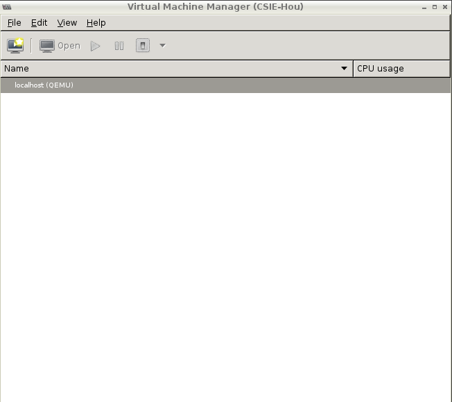
- 點選 Virtual Machine Manager 主視窗的 Edit ---> Connection Details ---> storage 會呈現如下的畫面，點選左下角十字按鈕 add pool
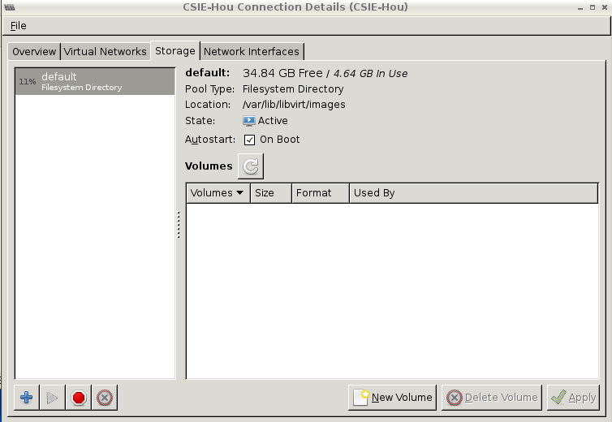
- 命名儲存池：KVMIMG[組別] ( 定義 image 檔所存放的路徑，以方便去使用)
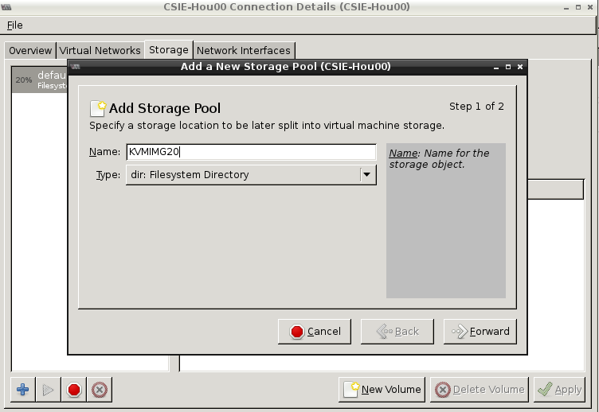
- 指定儲存池路徑
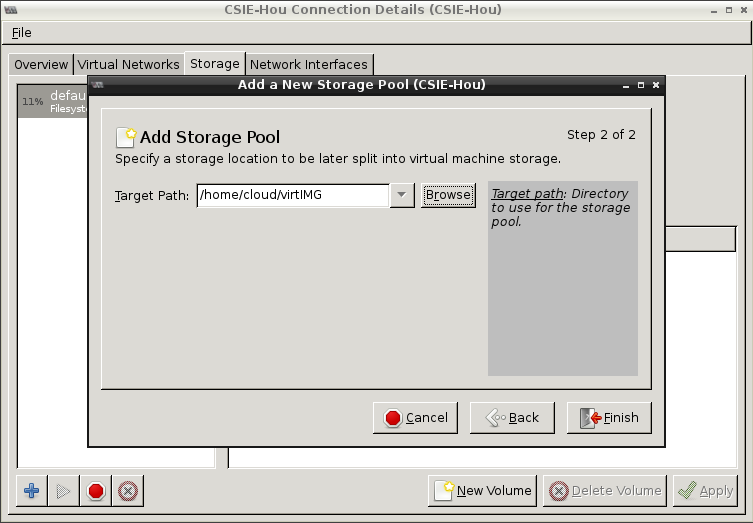
- 成功新增儲存池的畫面
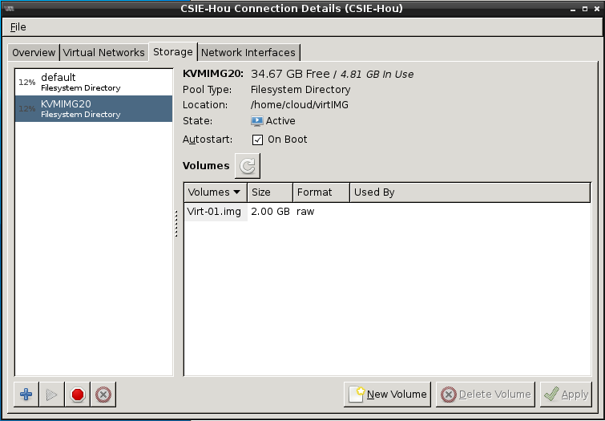
- Step 1 of 5
點選 Virtual Machine Manager 左上角的電腦圖示 Create a new virtual machine，出現如下圖所視的視窗;
接著給予虛擬機器名稱：KVM[組別]_01，並選擇欲安裝的方式，在此選擇的方式為 Local install media ( ISO image or CDROM )
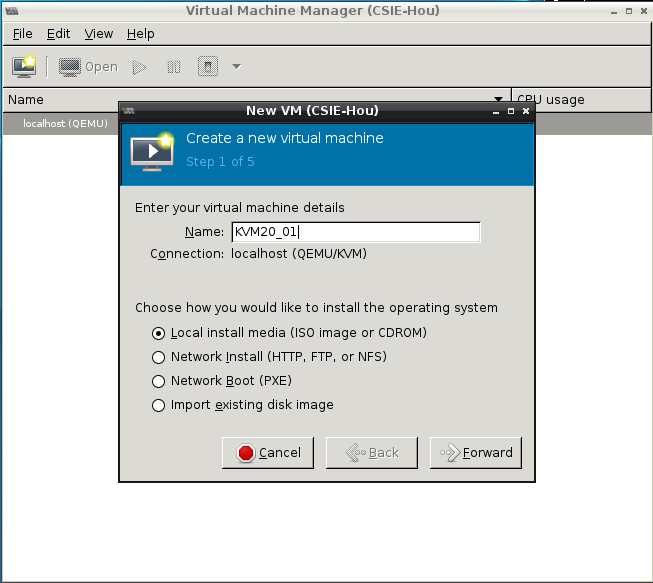
- Step 2 of 5
指定 iso 檔存放位置並指名作業系統與其版本
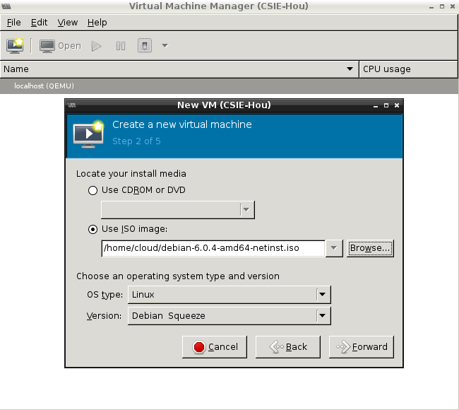
- Step 3 of 5
給 memory 和 cpu 大小

- Step 4 of 5
選擇事先準備好的空的 image
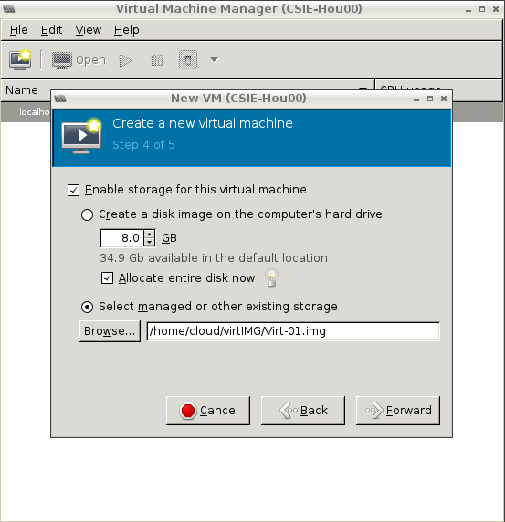
- Step 5 of 5
虛擬網路選用預設好的 NAT 的方式，點選上圖的 Finish 後便開始虛擬機器的安裝
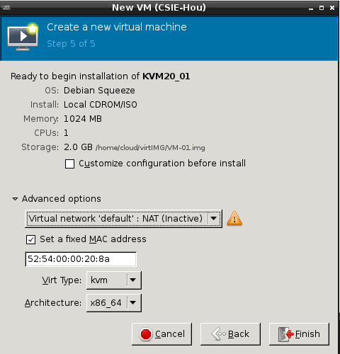
- 點選 Finish 後便如實體機器灌機般開始安裝虛擬機器的作業系統
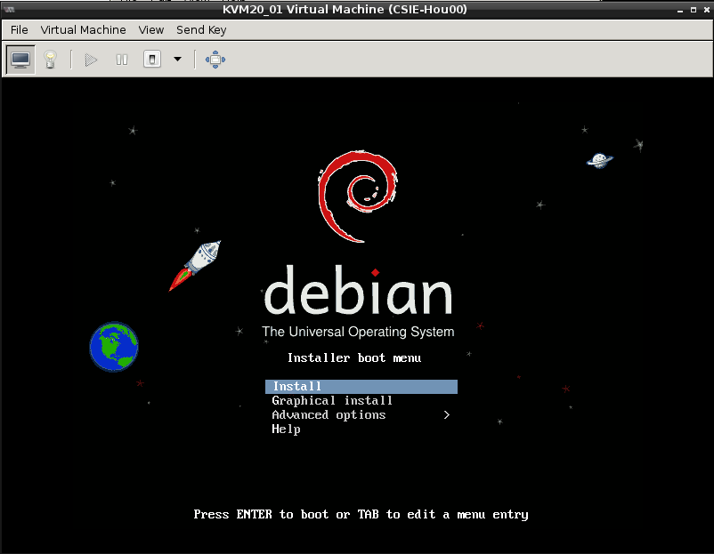
( 前面課程所帶過：VM 安裝過程 )
至此, 已完成了用 Virt-manager 創建一個新的虛擬機器
- 將已經灌好作業系統的虛擬機器 import 的作法如下：
$ cp ~/KVM/img/VM-01.img ~/virtIMG/Virt-02.img $ cp ~/KVM/img/VM-01.img ~/virtIMG/Virt-03.img
- step 1 of 4
如前面所述用 virt-manager 製作虛擬機器的方式開始另一個虛擬機器的製作，差別在這裡選擇 Import existing disk image
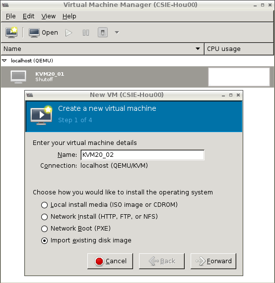
- step 2 of 4
此時所選擇的則是我們事先已建置好的 image (template)，也就是 Virt-02.img
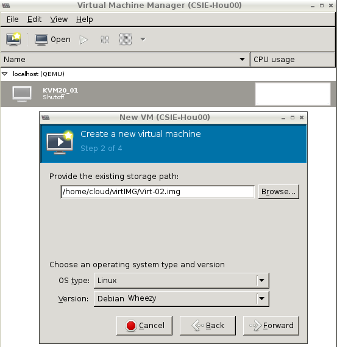
- step 3 of 4
其餘步驟則同於上述新增虛擬機器的方法
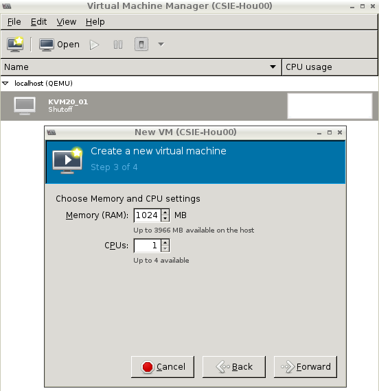
- step 4 of 4
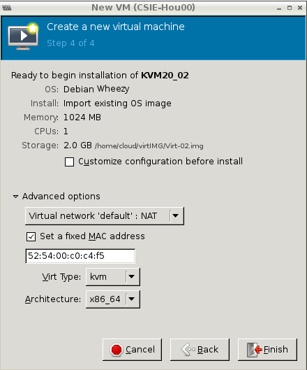
- 按下 Finish 之後即可進入作業系統
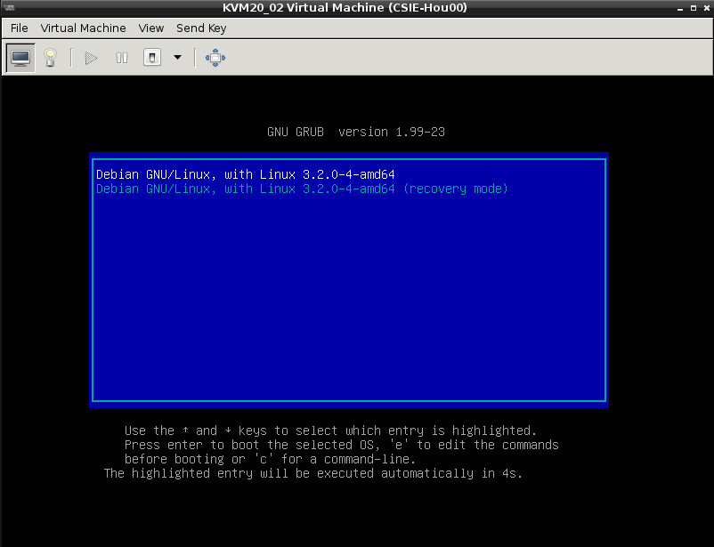
- 建好後可看見用 virt-manager 管理兩部虛擬機器的畫面
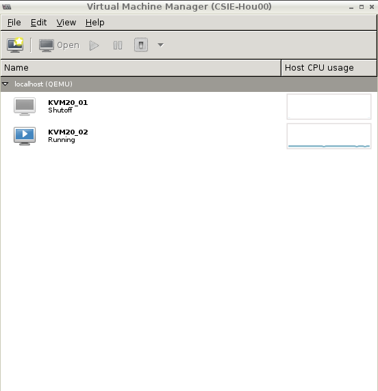
- 下載套件 ssh-askpass 作遠端認證用(A and B)
$ sudo apt-get install ssh-askpass
- 產生 key 來做遠端認證 (A)
$ ssh-keygen -t rsa -N ""
cloud@CSIE-Demo:~$ ssh-keygen -t rsa -N "" Generating public/private rsa key pair. Enter file in which to save the key (/home/cloud/.ssh/id_rsa): Your identification has been saved in /home/cloud/.ssh/id_rsa. Your public key has been saved in /home/cloud/.ssh/id_rsa.pub. The key fingerprint is: ac:be:5f:73:95:97:23:12:79:c0:8e:25:99:4f:c2:24 cloud@CSIE-Demo The key's randomart image is: +--[ RSA 2048]----+ | Eo.+. | | .* +o | | Oo . | | . . oo ..| | S . .oo.| | . .....| | . o . | | . . o | | oo. | +-----------------+
$ ssh-copy-id -i /home/cloud/.ssh/id_rsa.pub cloud@[node B IP]
cloud@CSIE-Demo:~$ ssh-copy-id -i /home/cloud/.ssh/id_rsa.pub cloud@140.120.16.79 cloud@140.120.16.79's password: Now try logging into the machine, with "ssh 'cloud@140.120.16.79'", and check in: .ssh/authorized_keys to make sure we haven't added extra keys that you weren't expecting.
- 在 Virtual Machine Manager 主視窗點選 File ---> Add Connection 並設定遠端連線
注意：Hostname 必須填欲監控遠端機器 (B) 的 IP
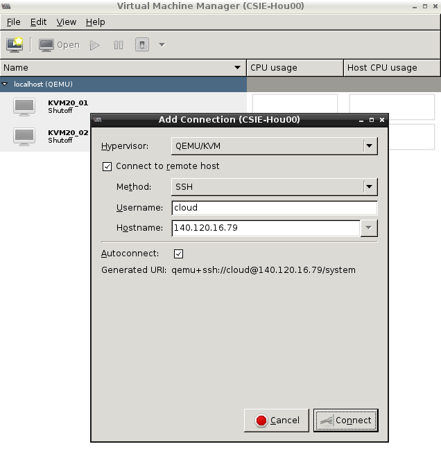
- 遠端連線設定成功
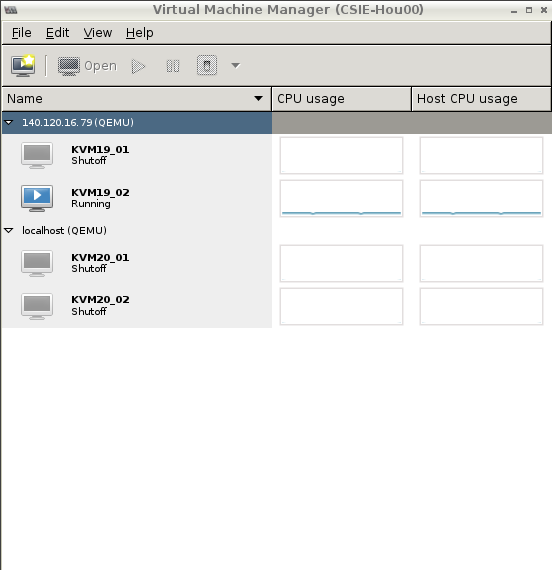
- 利用 Virtual Machine Manager 新增遠端機器的虛擬機器並管理.
- 如同前述新增虛擬機器般，差別在於 connection 為遠端機器 IP
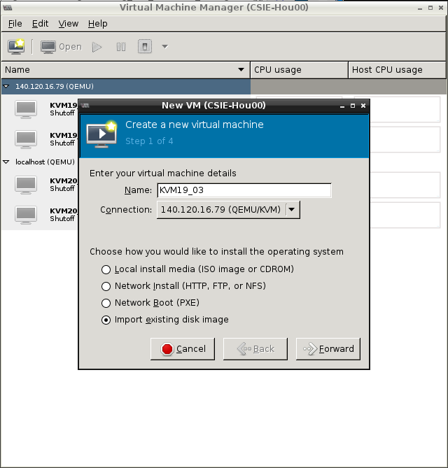
- 因為前面已事先新增 storage pool，因此此步驟才有遠端機器的 storage pool 可以選擇
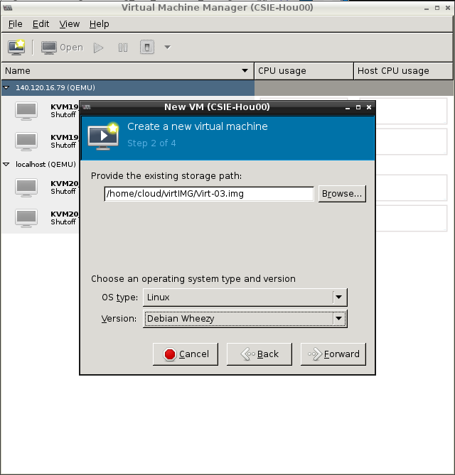
- 與前面相同
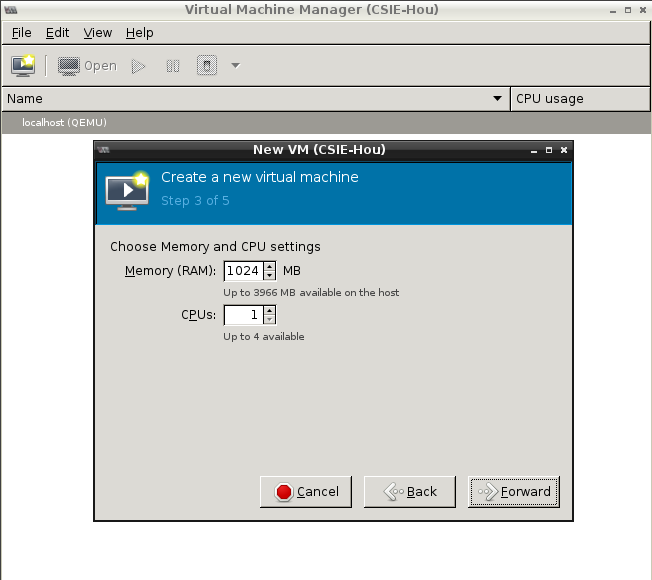
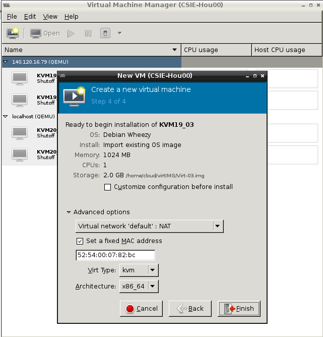
- 至此已完成遠端機器虛擬機器的新增
- Virtual Machine Manager 遠端監控畫面呈現
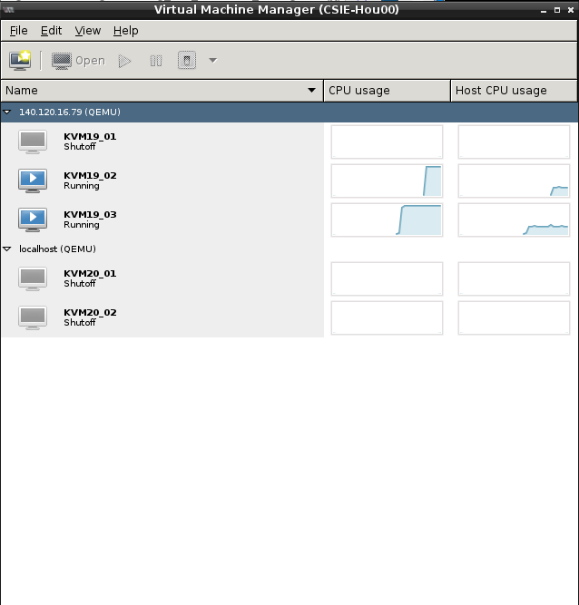
- 目前的實習機器上已配有兩張網卡，
eth0 用 vde_switch 建置，eth1 用 bridge 建置
$ ifconfig
eth0 Link encap:Ethernet HWaddr 68:b5:99:58:db:c5 inet addr:140.120.16.XX Bcast:140.120.16.255 Mask:255.255.255.0 inet6 addr: fe80::6ab5:99ff:fe58:dbc5/64 Scope:Link UP BROADCAST RUNNING MULTICAST MTU:1500 Metric:1 RX packets:1523590 errors:0 dropped:40 overruns:0 frame:0 TX packets:2548235 errors:0 dropped:0 overruns:0 carrier:0 collisions:0 txqueuelen:1000 RX bytes:654573371 (624.2 MiB) TX bytes:3157841382 (2.9 GiB) eth1 Link encap:Ethernet HWaddr 68:b5:99:00:db:c5 inet addr:192.168.0.XX Bcast:192.168.0.255 Mask:255.255.255.0 inet6 addr: fe80::6ab5:99ff:fe00:dbc5/64 Scope:Link UP BROADCAST RUNNING MULTICAST MTU:1500 Metric:1 RX packets:3509344 errors:0 dropped:546870 overruns:0 frame:0 TX packets:5955 errors:0 dropped:0 overruns:0 carrier:0 collisions:0 txqueuelen:1000 RX bytes:3156195829 (2.9 GiB) TX bytes:344462 (336.3 KiB) Interrupt:10 Base address:0x8000
- 開啟 virt-manager 主視窗
$ virt-manager
- 建立名稱為 br0 的 bridge，以供虛擬機器使用
點選 Virtual Machine Manager 主視窗的 Edit ---> Connection Details ---> Network Interfaces 會呈現如下的畫面，點選左下角十字按鈕 Add Interface
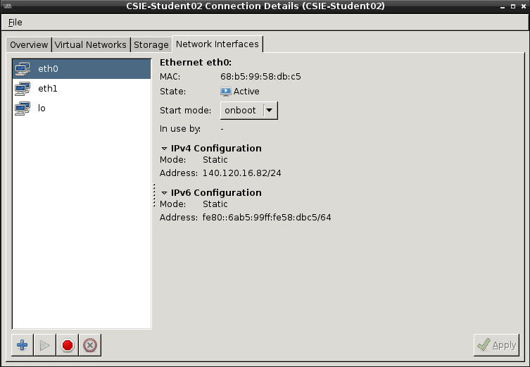
- step 1 of 2
選擇 type 為 bridge
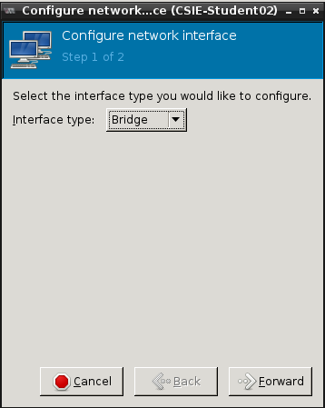
- step 2 of 2
設定 br0 網路介面
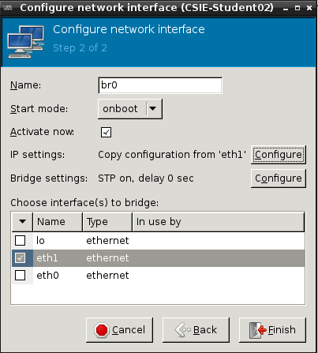
- 按下 finish 之後，會看到建好的 br0 已成功綁定 eth1
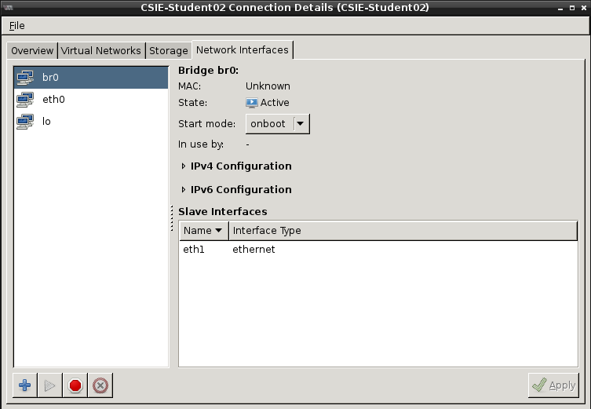
- 此時再觀看網路介面
$ ifconfig
br0 Link encap:Ethernet HWaddr 68:b5:99:00:db:c5 inet addr:192.168.0.XX Bcast:192.168.0.255 Mask:255.255.255.0 inet6 addr: fe80::6ab5:99ff:fe00:dbc5/64 Scope:Link UP BROADCAST RUNNING MULTICAST MTU:1500 Metric:1 RX packets:3 errors:0 dropped:0 overruns:0 frame:0 TX packets:7 errors:0 dropped:0 overruns:0 carrier:0 collisions:0 txqueuelen:0 RX bytes:936 (936.0 B) TX bytes:554 (554.0 B) eth0 Link encap:Ethernet HWaddr 68:b5:99:58:db:c5 inet addr:140.120.16.XX Bcast:140.120.16.255 Mask:255.255.255.0 inet6 addr: fe80::6ab5:99ff:fe58:dbc5/64 Scope:Link UP BROADCAST RUNNING MULTICAST MTU:1500 Metric:1 RX packets:1557321 errors:0 dropped:40 overruns:0 frame:0 TX packets:2597504 errors:0 dropped:0 overruns:0 carrier:0 collisions:0 txqueuelen:1000 RX bytes:659679221 (629.1 MiB) TX bytes:3193297456 (2.9 GiB) eth1 Link encap:Ethernet HWaddr 68:b5:99:00:db:c5 UP BROADCAST RUNNING MULTICAST MTU:1500 Metric:1 RX packets:3518586 errors:0 dropped:546870 overruns:0 frame:0 TX packets:6024 errors:0 dropped:0 overruns:0 carrier:0 collisions:0 txqueuelen:1000 RX bytes:3160485871 (2.9 GiB) TX bytes:348698 (340.5 KiB) Interrupt:10 Base address:0x8000
- 新增虛擬機器，為了避免複雜，先將之前所建立的 img 檔清空
$ cd virtIMG $ sudo rm Virt-*.img $ cp ~/Debian-sid.img.gz LM-[組別].img.gz $ gunzip LM-[組別].img.gz
- step 1 of 4
如同前面選擇 Import existing disk image 來製作虛擬機器，命名為 LM-[組別]
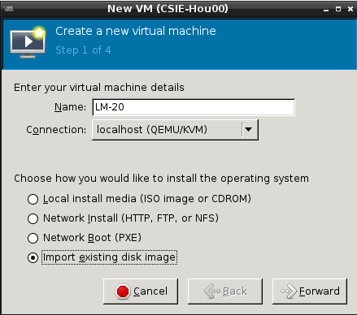
- step 2 of 4
選擇剛才所複製的 LM-[組別].img
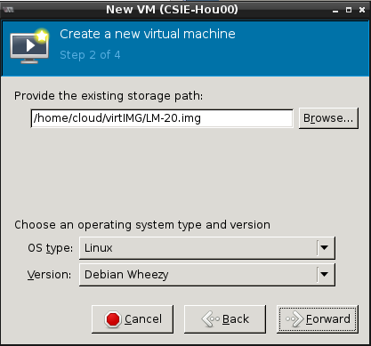
- step 3 of 4
選擇預設的 memory 和 CPU
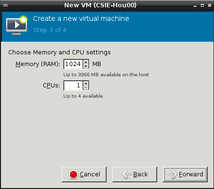
- step 4 of 4
最後網路部分，和前面不同的地方在於選擇剛才所建立好的 br0
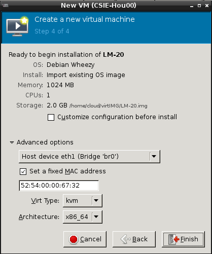
- 登入虛擬機器做網路設定
( nano 用法 --- ctrl + K : 刪除整列 ctrl + C : 觀看游標該列列數 ctrl + O : 儲存 ctrl + X : 離開 )
$ sudo nano /etc/network/interfaces
auto lo eth0 iface lo inet loopback iface eth0 inet static address 192.168.0.[your private IP + 40] netmask 255.255.255.0 gateway 192.168.0.[your private IP]
- 修改虛擬機器的 hostname 及 hosts 檔案
$ sudo nano /etc/hostname
LM-[組別]
$ sudo nano /etc/hosts
127.0.1.1 LM-[組別]
- 重新啟動虛擬機器
$ sudo init 6
- 欲使虛擬機器可以對外溝通，以及可以從外部機器登入到虛擬機器，需先在實習機器上面開啟 ip_forward 功能和執行 iptable 規則
$ sudo sysctl net.ipv4.ip_forward=1
net.ipv4.ip_forward = 1
$ sudo iptables -t nat -A POSTROUTING -s 192.168.0.0/24 -o eth0 -j MASQUERADE $ sudo iptables -t nat -A PREROUTING -d [Server-IP] -p tcp --dport 50[group ID] -j DNAT --to [VM-IP]:22
外部機器連線方式：$ ssh -p 50[group ID] cloud@[Server-IP]
- 虛擬機器線上遷移
在系統管理的工作中，若發生一些硬體問題時，通常需要停機來進行修復，因此也必須停止對外服務。
如果是透過虛擬化技術來建置服務環境時，當有一台實體主機需要停機維護時，就可以利用線上遷移的功能將虛擬機器移至另一台實體主機中繼續執行。
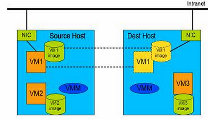
- 先將自己的虛擬機器 LM-[組別] 關閉，並且離開 virt-manager 主畫面
- 拷貝對方的 image 檔來互相進行 migration (也就是兩組的虛擬機器，互相遷移到對方的實習機器執行)
$ scp [對方組別IP]:~/virtIMG/LM-[對方組別].img ~/virtIMG/
- 務必確認在 virtIMG 裡有自己和對方的 img 檔
$ ls -l ~/virtIMG/
total 4194312 -rw-r--r-- 1 cloud cloud 2147483648 Nov 6 22:00 LM-19.img -rw-r--r-- 1 root root 2147483648 Nov 6 22:13 LM-20.img
- 修改自己虛擬機器的 XML 檔案
$ ls -l /etc/libvirt/qemu/
total 8 -rw------- 1 root root 2123 Oct 31 16:26 LM-[組別].xml drwxr-xr-x 3 root root 4096 Oct 19 21:56 networks
$ sudo cp /etc/libvirt/qemu/LM-[組別].xml /etc/libvirt/qemu/LM-[組別].xml.orig $ sudo nano /etc/libvirt/qemu/LM-[組別].xml $ sudo diff /etc/libvirt/qemu/LM-[組別].xml /etc/libvirt/qemu/LM-[組別].xml.orig
30c30 < <driver name='qemu' type='raw' cache='none'/> --- > <driver name='qemu' type='raw'/>
- 修改後重新啟動服務
$ sudo /etc/init.d/libvirt-bin restart
[ ok ] Restarting libvirt management daemon: /usr/sbin/libvirtd.
- 開啟虛擬機器 LM-[組別] 之後，在該台 VM 上按滑鼠右鍵選擇 Migrate
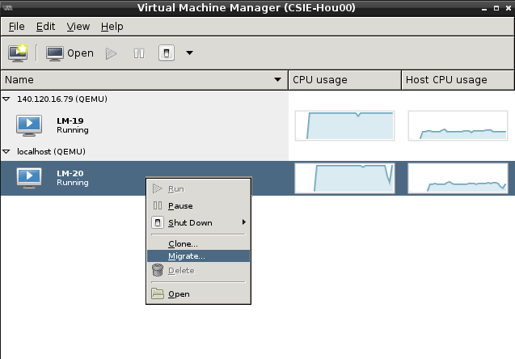
- 點開 Advanced Options，勾選和輸入欲遷移的目的 IP
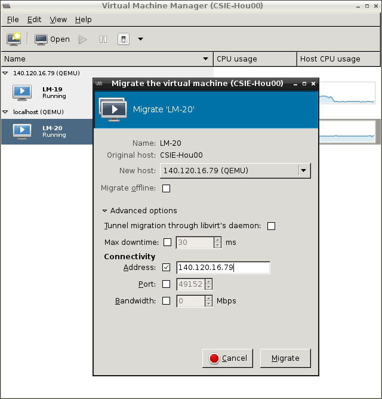
- 確定後按下 Migrate，即可看到自己的虛擬機器遷移到對方實習機器的過程
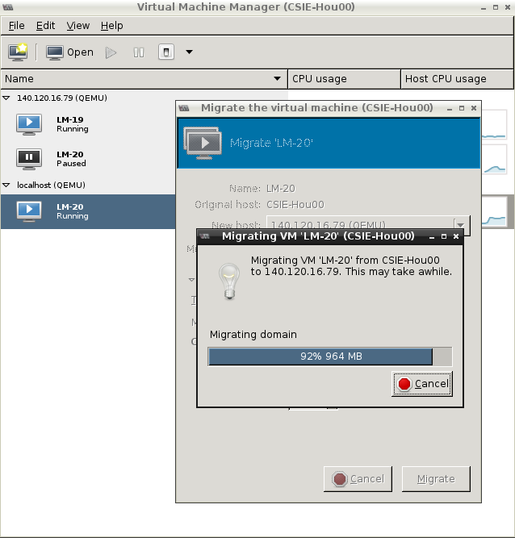
- 同樣的，對方的虛擬機器遷移到自己實習機器上
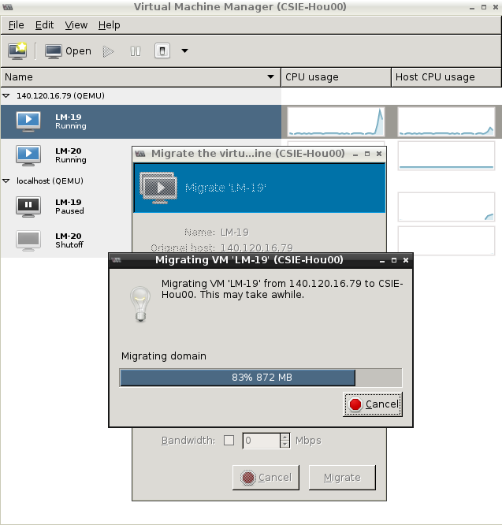
- 當遷移工作都完成後，就可以看到自己的虛擬機器已經被轉到對方的實習機器上繼續運作了
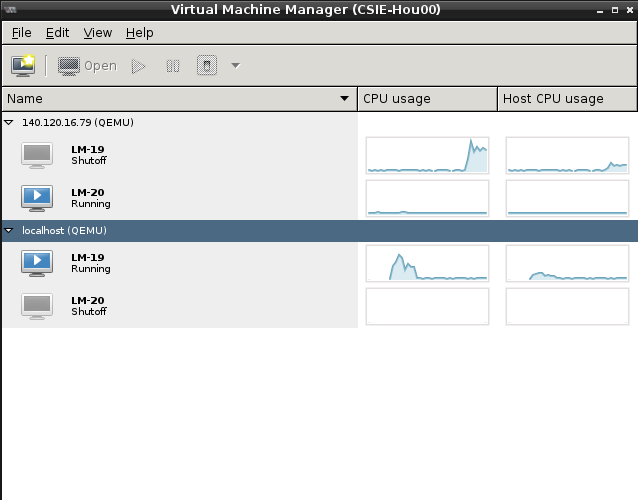